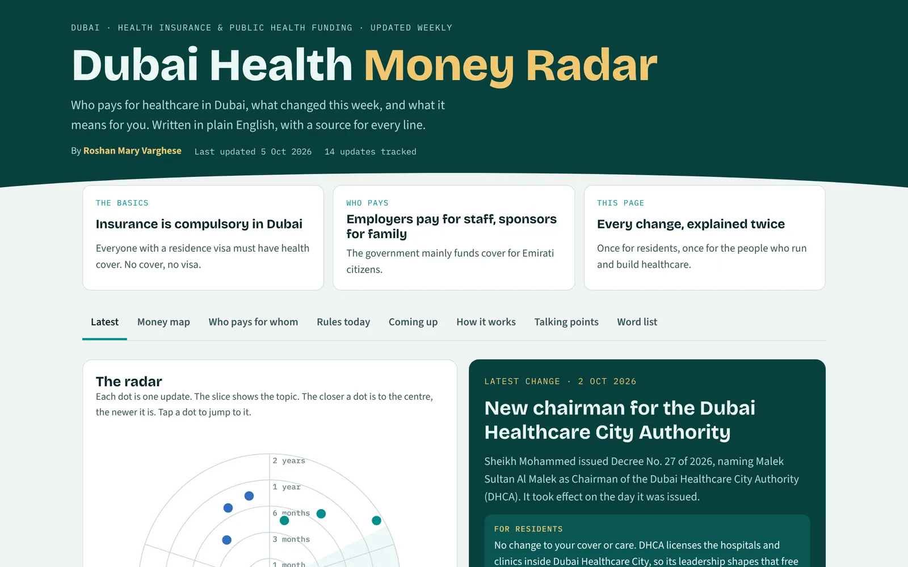

All workCase file 3 of 4
Dubai Health Money Radar
A weekly, plain-English record of who pays for healthcare in Dubai and what just changed.
- Year
- 2026
- Type
- Live tracker, updated weekly
- Built for
- Residents and the health industry

The problem
Changes to health insurance rules, public budgets and new health bodies in Dubai are spread across laws, press releases and news sites.
Residents can't easily tell what affects their cover. People building health products miss shifts that change their market.
What I built
A tracker that refreshes itself every Monday and explains each change in one place.
- A radar chart that plots every update by topic and age, next to a spotlight on the newest change.
- A feed where each update has one line for residents and one for the industry, with its source linked.
- Reference views: a money map, a diagram of who pays whom, the rules in force today, and a comparison with the US system.
Built with: HTML, CSS, JavaScript, SVG, a scheduled weekly research task, Claude
How I approached it
- UserTwo audiences with different questions. Rather than two products, each update carries a "for residents" line and a "for the industry" line, and a filter shows what matters to each reader.
- ConstraintsOnly confirmed changes go in, each with a source. Every item is labelled as in force or announced, because announced reforms often change before they land.
- Trade-offsIt updates weekly, not daily. Fewer, verified items are more useful than a noisy feed, and I review each week's changes.
What it shows about me
I can design for two audiences at once and keep a product honest about what's confirmed.
Next case file
Read next
Biopharma Deal Radar
Explains who is buying whom in medicine across the USA, India and the Gulf, for people outside the industry.